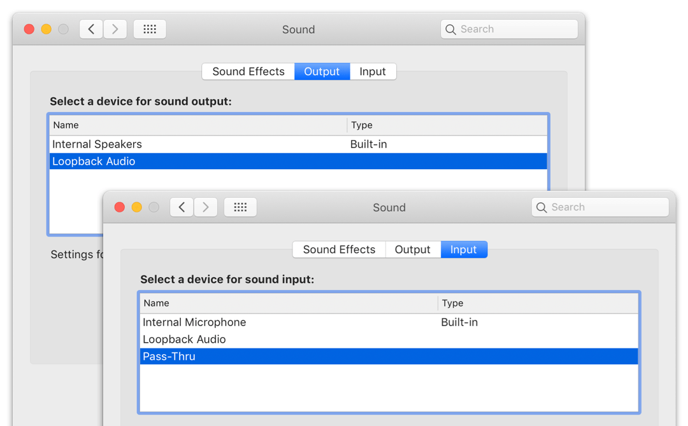
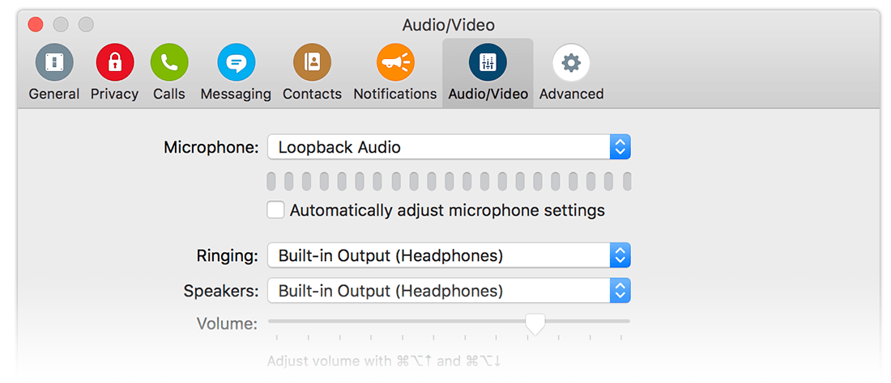
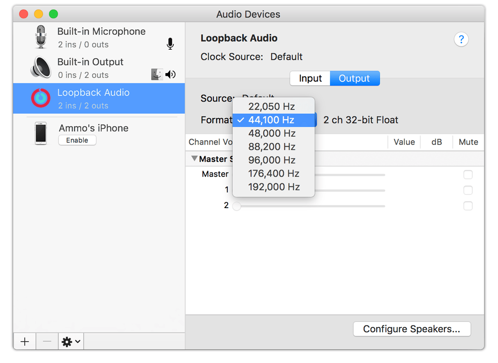

Using Your Virtual Audio Devices
This page details how to use your virtual audio devices with other software on your Mac.
Selecting Virtual Audio Devices on Your System
Once a virtual audio device is enabled in Loopback, it's immediately ready for use by any application. You'll see the device in the Sound System Preferences, under both the Output and Input tabs, as pictured here:

A Loopback virtual audio device in the Sound System Preferences
The virtual audio device will also appear in the device selectors for any audio applications which offer them. You'll be able to select the device as an audio input in Skype, FaceTime, GarageBand, and many other applications.

A Loopback virtual audio device selected in Skype's preferences
Adjusting Device Sample Rate
The initial sample rate for a newly created Loopback virtual audio device is determined by the system's current default output device. This sample rate can be changed at any time. This can be useful with higher fidelity audio, as increasing the sample rate is the only way to ensure the entire audio flow will not contain any lossy conversions.
To change the sample rate of an enabled Loopback virtual audio device, open MacOS's Audio MIDI Setup application (located in the Utilities folder of your Applications folder). Here, you can change the sample rate exactly as you would for an actual hardware audio device. Your Loopback virtual audio device will remember its new sample rate, even if it is later disabled and re-enabled.

Changing the virtual audio device's sample rate in Audio MIDI Setup